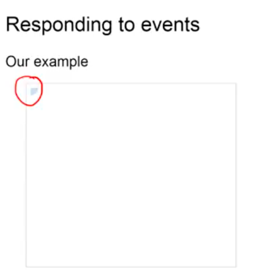
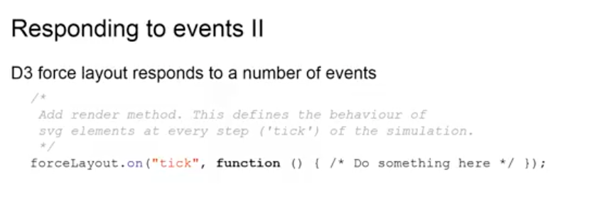
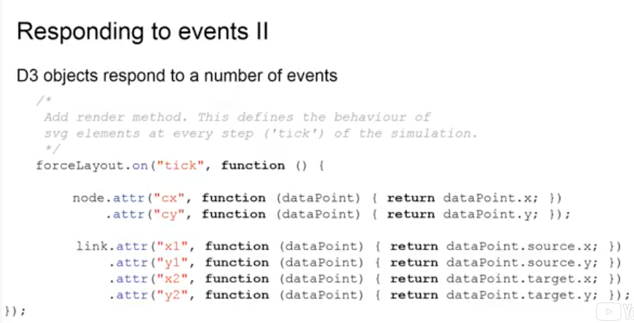
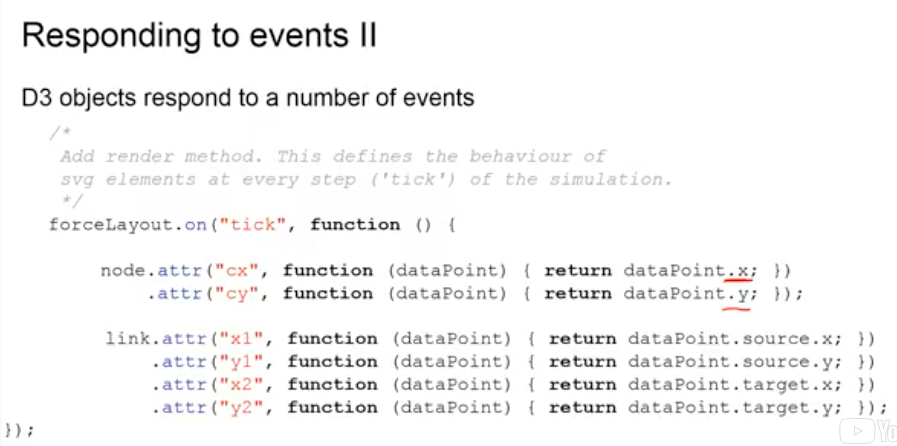
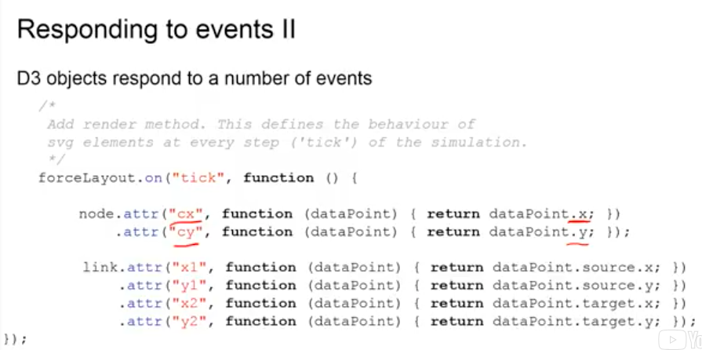
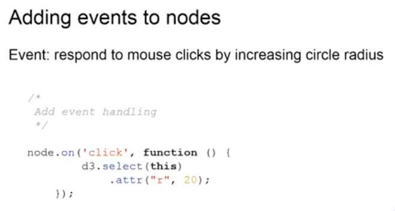
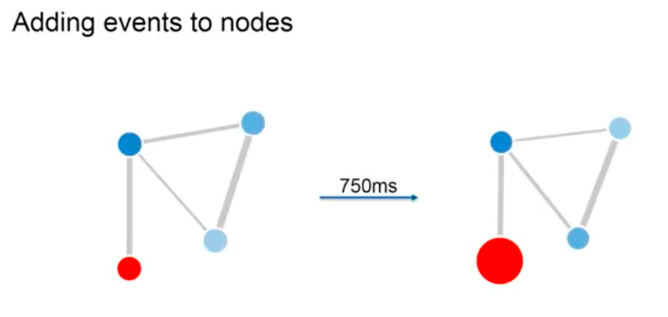

In this part, we're going to talk about event handling in D3 and how we can use events to keep updated with changes in the code and create interactivity for the user.
In the last part, we created a graph model, which calculates the node positions dynamically and we also connect these positions to the graphics and the number of shapes in our SVGs. Now, if you would look into our example, what you could see is that you can't see much. All you can see is little quarter shape on the top left of the visualization and if you look into the code of the DOM, you will see that all the shapes are present.
However, they are all located in the default position of (0,0) in terms of coordinates, even though the layout is calculating new positions constantly. Now, we have connected them, but we are not keeping up with the changed position of the layouts. So, what we now need to do is we need to take advantage of the events functionality of D3 to tell the shapes of our SVG to be updated in terms of position every time our layout is calculating a new position for a certain node. This is handled by the tick event that is implemented by the force layout.
The force layout in D3 actually implements three different events: a start event that is called when the event is first started, the tick event is called on every step of the simulation, meaning every time a new position is calculated for a node, this tick event is called on every node, and finally, an end-event that is called as soon as the simulation is stopped. We'll be taking advantage of the tick event for now and we will tell the force layout to do something as soon as there is a new simulation step completed, and this is something we are going to do.
We are are going to take the positions for the nodes, calculated by this layout, and attach them to our SVG shapes, so the actual position on our graphic gets updated. Now, the position of the node, calculated by the simulation by the layout, is stored in an attribute on the data point called x, as you can see back here and y.
So, these are the coordinates, calculated by the layout. However, SVG uses a different attribute to define the position on the SVG graphics. These are called cx and cy.
So, all we need to do now, is we need to assign the cx attribute the value of the data point x back here. This is working the same way that we used a function to assign the line thickness depending on the data in the previous video, and the same thing is working for the link down here, except, this time, we have four coordinates: two coordinates for the starting point of the line and two for the end point of the line.
And, if we now take a look again at our example, you can see there is a nice-looking graph that gets updated dynamically as soon as the node positions change in the layout and if you want to see this in action and actually move around, please take a look at our demo videos.
Now, one more thing, we would like to add in this and which is also a great example for the use of events is some sort of user interactivity, meaning, we can click around the graph, maybe drag them around, maybe transform the shape of a graph by clicking around. That's why we're going to use the on click event in D3, because SVG elements are DOM elements, they do already implement a click event, just like buttons or links do in a website.
So, all we have to do now is provide a function that will tell to node what it will do if it has been clicked on. Remember here that the node selection actually contains every node on our graphic and the click event, so, the function we define here, will be called on the node that is clicked on. That is why we have to use the 'this' keyword down here to select the current node that has been clicked on using D3. So, D3 selects this and then we can change any attribute, we can assign new attributes to this node itself. In this case, we'll change the radius attribute, meaning the size of the circle to 20. In our case, this will increase the size of the node to 20 from 5 as it was before.
If you click on the red node, it will change its shape from what you see on the left to what you see on the right. However, this would happen instantly. Sometimes, it would be nice to create a smoother transition and have a bit of a nicer animation. Luckily, D3 also supports animations.
Of course, it would sometimes be nice to have a bit of a smoother transition between the two sizes. This is where animations come in. D3 already supports animations. In this case, all we need to do is, before we apply the new attribute value, we tell D3 that we wanted animated, they call in the transition function and we will also then specify a duration for this transition. In this case, we'll use 750 milliseconds. So, if you then go back to our example and click on the red node, it will slowly increase its size over the course of seven hundred and fifty milliseconds until it stops when we have the right configuration.
This has shown you how events can be used to keep track with internal changes and also provide some interactive features. If you would like to know more, see more examples of different events that you can implement and get a bit more detail of how it actually works in the code, please refer to our demo video.